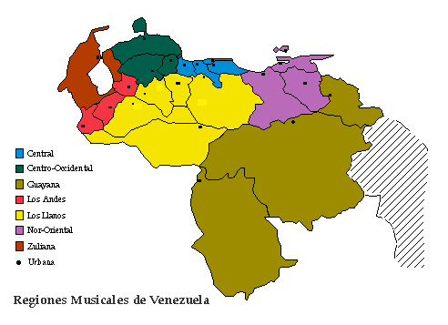
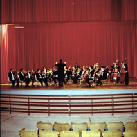

HOME
NUESTRA
MUSICA
Dr. Emilio
Mendoza
II. Región Urbana

Región Urbana
Por su condición
multicultural, la
región
urbana, o áreas de medianas a grandes ciudades, tienen una
actividad
musical muy variada. Los hábitos de vida citadina cambian
radicalmente
las funciones de la cultura musical que sus convivientes conocen por la
región en donde se encuentra la ciudad. Gran parte de los
habitantes
de las ciudades pueden provenir de otras regiones y la música
que
ellos traen de sus tradiciones originarias tambien se deforma o se
olvida.
Solamente en los barrios de las ciudades, donde el contacto entre la
gente
es más directo, se genera actividad musical de carácter
comunal
parecido al de sus regiones de origen.
Consumo
El consumo musical se
contrapone a las costumbres.
La
actividad musical urbana se localiza en teatros, salas de conciertos,
plazas
y recintos mixtos como restaurantes y bares donde es siempre foco o
acompañante
de una actividad comercial. La mayor parte de la escucha musical se
realiza
indirectamente a través de los medios de comunicación
como
la radio, televisión y el consumo de discos, casetes y discos
compactos.
En la urbe, la función del comercio es primordial y existe una
fuerte
presencia del componente cultural extranjero por el dominio de la
información
que esta cultura tiene en los medios como sistema de mercadeo.
Música e Instrumentos
Foráneos
En cualquier
ejecución musical pública
que
acontece en las ciudades, coexisten los instrumentos eléctricos
(Guitarra y Bajo eléctricos, Tres amplificado), los digitales
(teclados
y percusión MIDI, computadoras con software de música),
la
percusión internacional (Batería, Conga, Bongós),
y la amplificación del sonido. Culturas musicales
foráneas
y recientes han formado una costumbre ya arraigada en la vida de las
urbes,
como es el caso, entre otros, de la Salsa, el Bolero, la Samba y el
Bossanova,
el Blues, Rock, Hip-Hop, Rap, el Reggae y el Jazz. La pertenencia de
estas
músicas a nuestra cultura venezolana es determinada por la
manera
en que las culturas de nuestro país asimilen y adapten la
capacidad
de expresión de cualquiera de las músicas
foráneas,
para satisfacer las necesidades de cada segmento cultural. Así
puede
surgir un venezolano que se convierta en un máximo exponente de
una cultura musical foránea, como por ejemplo el caso de Oscar
D’León
en el ámbito de la Salsa internacional.
Las Sinfónicas
Por otro lado, la
cultura musical sinfónica
europea
se ha establecido en las urbes a través de un sistema de
orquestas
juveniles, además de las orquestas pro-fesionales ya existentes
en algunas ciudades del país. La música sinfónica
europea es una actividad musical típica de las urbes.
Los institutos de
educación musical en las
ciudades,
tanto conservatorios como universidades, tienen una programación
de estudios dedicada únicamente hacia el aprendizaje de los
instrumentos
sinfónicos y de la música europea, especialmente la
alemana.
Sinembargo, a
través de dos agrupaciones
tradicionales,
la Estudiantina y la Orquesta Típica, que usualmente existen
dentro
de estas instituciones, la música venezolana tradicional logra
difundirse.
Son ensambles de instrumentación híbrida compuesta de
instrumentos
sinfónicos y populares venezolanos.
Músicos por Dinero
El acento
foráneo se impone en las urbes a
través
de los medios, del consumo y por vía de la educación. No
obstante, la mayoría de los mú-sicos aprenden y conviven
con las diferentes culturas musicales al mismo tiempo, incluyendo la
música
popular tradicional deformada por la urbe. Ellos logran cambiarse
transparentemente
de una a otra, trabajando como músicos sinfónicos,
tocando
en bailes por dinero, grabando cuñas, dando clases y festejando
tradicionalmente en su comunidad.
Así, el
músico aumenta su ingreso
monetario,
pero se la pasa en un “corre-corre” llamado en el medio musical “matar
tigres” o tocar por dinero. De todas estas influencias, se puede
esperar
que el músico de la ciudad desarrolle nuevas mezclas para la
música
venezolana del futuro, si es que le queda tiempo para reflexionar.
¿Música Extranjera o
Venezolana?
En este libro no vamos
a incluir a la música
extranjera
ni a sus instrumentos, a pesar de que ellos son parte activa de nuestro
medio ambiente musical, sobre todo en las ciudades. Su aparición
en nuestra historia cultural es muy reciente para considerarlos como
esencia
de nuestra tradición venezolana. Por otro lado, la
mayoría
de estas culturas musicales foráneas no se han transformado
todavía
en algo nuevo venezolano, ya que se mantienen idénticas a las de
sus lugares de origen.
El factor tiempo es
importante para que un
instrumento
o una música foránea se convierta en esencia de nuestra
cultura
donde antes no existía. Al transcurrir los años,
sólo
la música extranjera que ha hecho una influencia significativa
en
nuestra sociedad se mantiene activa y no se olvida. La comunidad decide
con el tiempo en adoptarla porque le es útil.
La fuerza creativa de
los músicos,
especialmente
en los compositores, es el elemento más importante en
transformar
al “invasor”. Los compositores aportan con el tiempo cambios a la
música
extranjera y la convierten en una música nueva que sólo
existe
en nuestro país.
De esta manera la hacen venezolana.